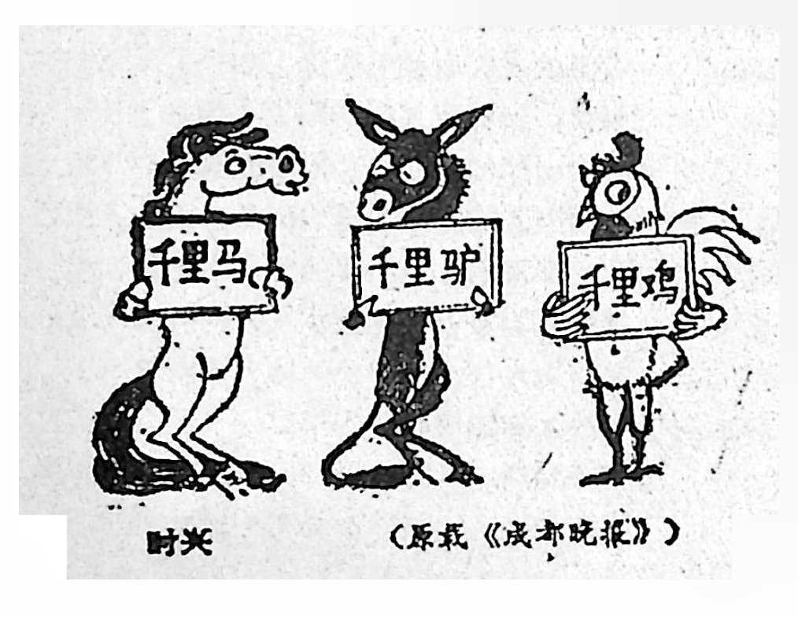

佚名 《人事》1987年第3期（总第18期），第46页（原载《成都晚报》）
时兴
All the Rage
- Text in the drawing
- 千里马 / 千里驴 / 千里鸡
Thousand-li horse / Thousand-li donkey / Thousand-li rooster - Description
- A horse, a donkey and a rooster stand in a row, each holding up a placard proclaiming itself a “thousand-li” steed.
- Note
- 千里马, the horse that runs a thousand li a day, is the standard metaphor for exceptional talent; once talent-scouting became fashionable, everyone claimed the title.
- Artist
- Unattributed 佚名
- Reprinted from
- 《成都晚报》 — Chengdu wanbao (Chengdu Evening News)
- Published in
- 《人事》1987年第3期（总第18期）, p. 46
- Themes
- Talent and its neglect · Fable, legend and history

Cite
Unattributed, “时兴” [All the Rage], Renshi (Personnel) 《人事》, 1987, no. 3, p. 46.